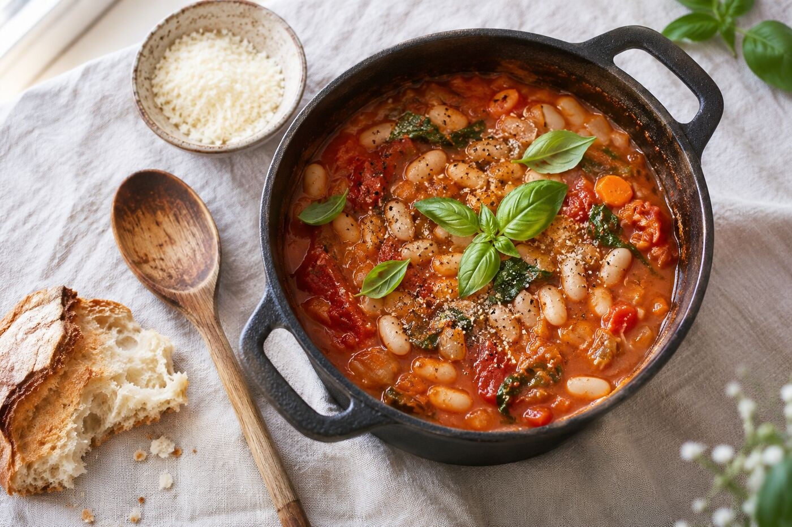
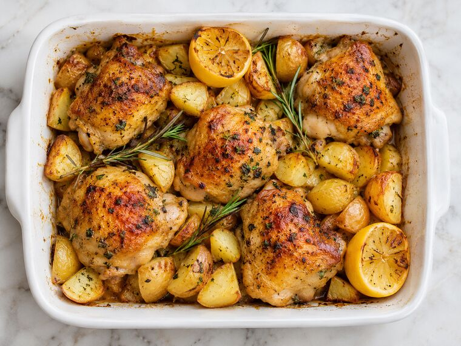
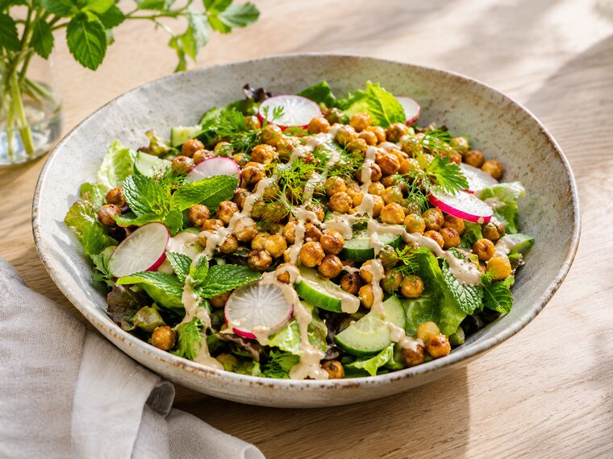
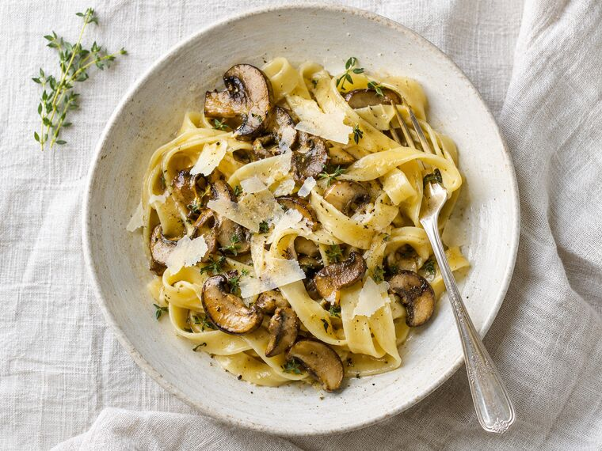

Tonight, for two
Cook what you already have.
Tell Larder what’s in the cupboard. It finds recipes that use it up, plans the week, and writes the shopping list for the rest.
In your kitchen
✓Tomatoes✓White beans✓Basil✓Parmesan+ Add
12 recipes matchShow recipes

35 minTomato & white bean stew
This week
Edit plan →
MondayLemon roast chicken & potatoesHigh protein1 tray

WednesdayCrispy chickpea saladVegetarian20 min

FridayMushroom tagliatelleVegetarian25 min
Pantry
Olive oilHalf a bottleIn stock
Basmati rice200 gRunning low
Lemons0Out
Chickpeas2 tinsIn stock